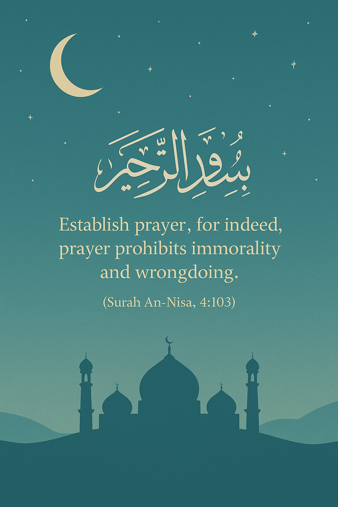

Prayer (Salah) five times a day is the foundation of a Muslim's faith and a direct link between the servant and Allah. The Prophet Muhammad (ﷺ) said: "The first matter that the slave will be brought to account for on the Day of Judgment is the prayer. If it is sound, then the rest of his deeds will be sound. And if it is bad, then the rest of his deeds will be bad." (Sunan al-Tirmidhi 413). Regular prayer purifies the heart, strengthens the soul, and keeps a person away from sin.
| Prayer Times | |
|---|---|
| Location | |
| Default Location | Lucknow, India |
| Prayer | Time |
| Fajr | 6:00 AM |
| Dhuhr | 1:00 PM |
| Asr | 4:30 PM |
| Maghrib | 6:15 PM |
| Isha | 7:30 PM |